揭露数据不一致的利器 —— 实时核对系统
随着企业业务发展，以及微服务化大趋势下单体服务的拆分，服务间的通信交互越来越多。与单体服务不同，微服务间的数据往往需要通过额外的手段来保障一致性，例如事务消息、异步任务补偿等。除了从机制上最大程度保障以外，如何观测并及时发现数据不一致也非常重要。
本文介绍 Shopee Financial Products 团队设计和开发的实时核对系统（Real-time Checking System），它接入简单，只需根据核对需求配置对应的核对规则，实现了规则热加载，并能在不侵入业务的前提下对系统数据进行实时监测对比，及时发现数据的不一致。系统落地至今，已在 Shopee 多个产品线推广使用，帮助不同团队快速发现线上数据不一致问题，为数据保驾护航。
目录
1. 背景
1.1 系统数据的不一致性
1.2 离线核对的缺陷
2. 实时数据核对
2.1 系统架构与核对流程
2.2 核对功能演进
3. 性能表现
4. 总结
1. 背景
1.1 系统数据的不一致性
在日常的开发迭代中我们能发现，系统的数据有时并不按照我们设想的那样进行变更。常见的场景如：用户进行了还款（Repay），系统 A 收到了还款请求后调用系统 B，将已冻结的账户进行解冻，但因为某些原因（如系统故障、网络分区等），解冻的请求没有抵达 B，或者解冻成功的响应没有返回给 A，此时会出现已经确定收款但未解冻，或未确认收款却已解冻的情况，从而引起用户投诉或资金损失。
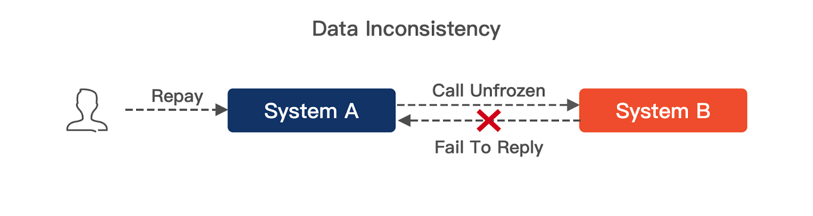
造成这类问题的原因通常有：代码逻辑 Bug、并发场景处理不当、基础组件（网络、数据库、中间件）故障、跨系统间缺乏原生的一致性保障等等。随着业务扩展，企业内的应用越来越多，且有许多单体应用（Monolithic Application）向微服务（Microservices）拆分转型，分布式的场景下丢失了数据库事务的支持，需要解决数据一致性的问题。
保障数据一致的方案有很多种，在单体服务且缺少不同组件间（例如跨 Database、不同存储中间件）事务支持的场景下，可以使用本地事务表 + 补偿任务的组合，将主表数据与检查任务通过事务写入，再通过异步任务不断检查目标数据是否一致并进行补偿，可实现最终一致性；在跨服务场景下，Saga 模式通过可靠消息及服务提供回滚事务的能力，来实现分布式事务。
但是，对于重要的业务，不管使用何种一致性方案，提供额外的检查、核对、兜底手段都是必要的，由此衍生出了很多的业务核对、对账的需求。服务间通过特定手段保障数据一致性，并设计无侵入的旁路系统进行数据核对和校验，是微服务架构下的典型搭配。
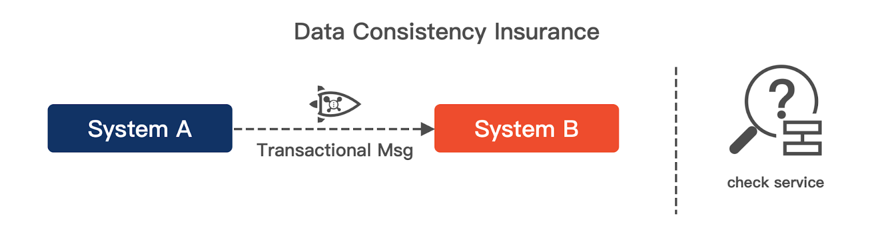
1.2 离线核对的缺陷
常见的离线数据核对可以通过定时任务，按照一定的筛选条件，从不同数据源中获取特定数据，再进行比较。这种方案的伪代码如：
func Check() {
// 获取上游 update_time 落在 [a, b) 的数据行
upstreamRows := QueryUpstreamDB(a, b)
for uniqueKey, sourceData := range upstreamRows {
// 为每个上游数据查找对应的下游数据
targetData := QueryDownstreamDB(uniqueKey)
// 对比上下游数据
Compare(sourceData, targetData)
}
}
时效性低是这类查表方案的通病。核对操作通常放在异步任务中定时执行，执行时间和离数据变更时间有一定延迟，且定时任务的查询条件也会对核对目标造成影响。当出现异常数据时，不能及时发现问题，只能等待下次定时任务执行后才能发现。
引入了额外的扫表开销同样是个不容忽视的问题。在数据量较大，尤其是存在大量 INSERT 操作的场景下，想要核对就需要 SELECT 出上下游的目标数据。为了在不影响正常业务的情况下及时处理完核对任务，开发者可通过将查询转移到从库，甚至引入核对任务独占的从库，但此类查表核对方案在资源使用和实现复杂度方面都不够理想。
同时，由于查表得到的结果只是当前的数据版本，在两次检查之间，数据可能发生了多次变更，定时任务无法感知和观测到每个状态变更，在数据被频繁 UPDATE 的场景下也存在一定的核对和检测难度。
因此，要实现更好的数据核对，我们需要考虑以下几点目标：
- 实现秒级核对。
- 尽量减少数据库查询。
- 核对数据变更，而非核对数据快照。
- 简单灵活的接入方式。
2. 实时数据核对
为了更好地发现数据不一致的情况，Shopee Financial Products 团队在 2021 年中设计并实现了 Real-time Checking System（实时核对系统，RCS）。RCS 具有以下核心优势：
- 秒级数据核对。
- 对业务逻辑无侵入。
- 可配置化接入。
从上线至今，RCS 帮助团队及时检测到了多次数据问题，可以将原因归纳为以下几个方面：
- 代码逻辑 Bug：包括幂等处理、并发问题、业务逻辑错误等。
- 系统运行环境：DB 异常、网络抖动、MQ 异常等。
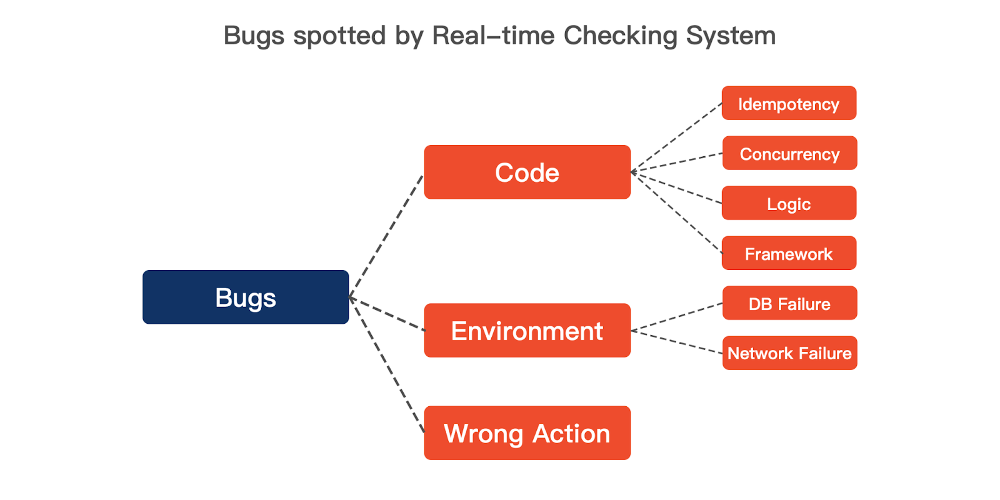
本节主要介绍 RCS 的实现，包括系统架构和核对流程、核对性能优化、消息通知机制等。
2.1 系统架构与核对流程
在系统设计上，我们将 RCS 分为了三层：
- 变更数据获取（Data Fetching Layer）
- 数据核对（Data Checking Layer）
- 核对结果处理（Result Handling Layer）
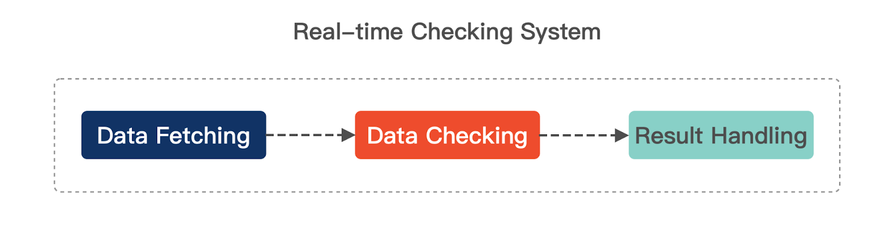
2.1.1 变更数据获取
实时核对，顾名思义需要着重关注“实时”和“核对”两个要点。Data Fetching Layer 负责达成实时的目标，通过对不同 CDC（Change Data Capture，变更数据抓取）方案的调研，我们使用了 Log-Based 的方案来提供时效性保障。
扩展阅读
CDC 模式用于感知数据变更，主要可以分为以下 4 类：
- Timestamps，基于 update_time 或类似字段进行查询来获取变更数据。
- Table Differencing，获取完整数据快照进行比对。
- Triggers，为 DDL、DML 设置 Trigger，将变更内容用额外的操作记录至数据库。
- Log-Based，典型例子为利用 MySQL binlog 和 MongoDB oplog。
其中，Timestamps 方案和 Table Differencing 均由定时任务驱动，时效性较弱。Timestamps 方案无法感知被删除的数据，使用时需要由软删除代替；Table Differencing 方案弥补了这个缺点，但是多次获取完整数据会让整套方案显得非常笨重。
Triggers 方案和 Log-Based 方案获取到的均为数据变更而非数据快照，但 Triggers 感知后以特定的语句将其记录下来，本质上是一次写操作，仍给数据库带来了额外的负担。
当 MySQL 产生数据变更时，高可用的 binlog 同步组件会获取到对应 binlog，并将其投递至 Kafka 中，以此获取变更数据的数据值用于核对。
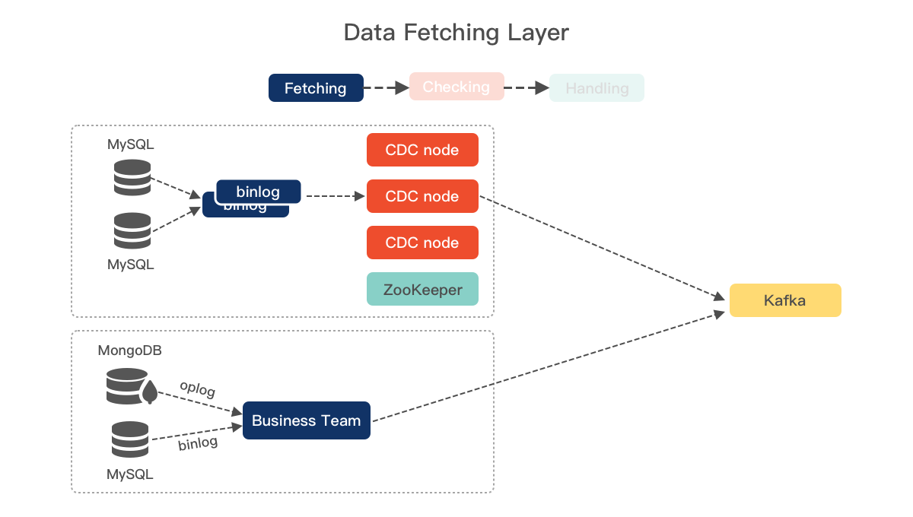
在实际使用中，需要核对的数据可能并非都存在于 MySQL 中，例如我们也需要核对 MySQL 与 MongoDB 的数据、MySQL 与 Redis 的数据。为此，业务系统也可以通过自行投递特定格式的 Kafka 消息来接入，从而保证接入的灵活性。
2.1.2 数据核对
Data Checking Layer 负责处理接收到的数据流，包括获取特定的核对规则，接收到数据时进行暂存或比对。RCS 对 binlog 数据进行抽象，提炼了一套通用的可配置化的核对规则。用户只需要填写对应的规则，即可实现自助接入。规则定义示例如下：
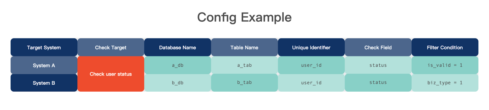
不难想象，不同系统间数据的变更是有先后的，且变更的消息被 RCS 接收到也会有先后顺序。因此，先抵达的数据需要被存储下来作为后续比对的目标，后抵达的数据则按照规则与已有数据进行比对。
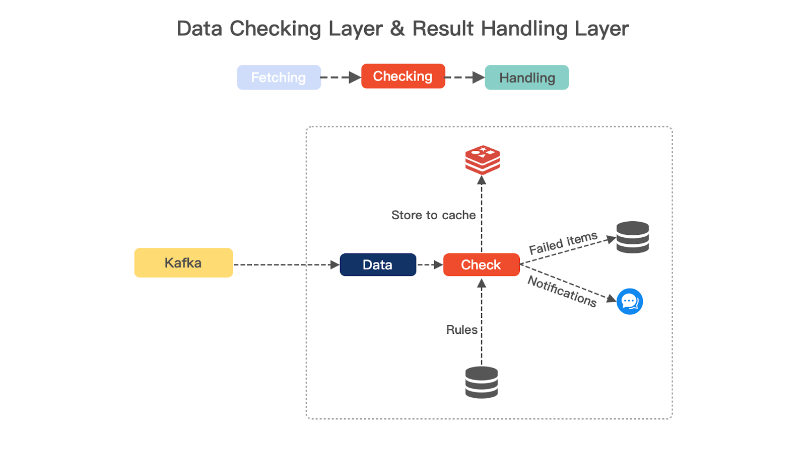
为了便于描述，这里先定义几个名称：
- 数据上游：先到达 RCS 的数据为上游。
- 数据下游：后到达 RCS 的数据为下游。
- 核对项：某个数据核对需求，包括上游数据和下游数据。例如：System A 与 System B 核对用户资金状态的需求。
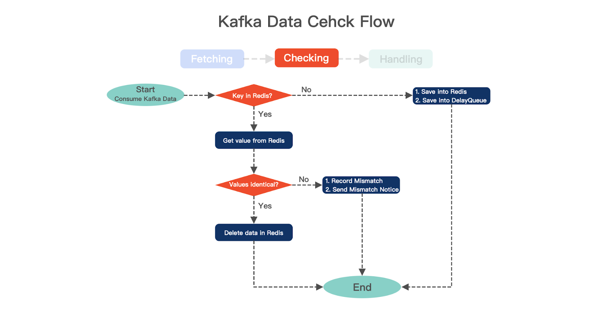
以下面这一次核对为例，它需要判断数据是否在 10 秒达成一致，整体的核对流程可以简要描述为：
- （图 8）核对项的上游数据到达，暂存 Redis 和延迟队列。
- （图 8）RCS 等待核对项的下游数据：
- 比对数据到达，进行核对，并删除 Redis key；
- 比对数据未到达，判断延迟队列中的数据。
- （图 9）延迟队列到达时间后，再次查询在 Redis 中是否有对应数据：
- 存在，则超过核对时间阈值，发送异常告警，删除 Redis key；
- 不存在，则已核对。
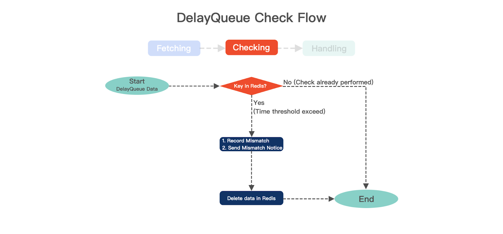
2.1.3 消息通知机制
RCS 的目标是及时发现数据不一致的问题，因此，在 Result Handling Layer 中接入了 Shopee 企业 IM（SeaTalk）的机器人进行告警。未来告警接口也会进行开放，便于扩展和让其它消息应用进行接入。
我们设计了四种消息通知机制：
- Mismatch Notice
- Aggregated Notice
- Recovery Notice
- Statistical Notice
Mismatch Notice 应对一般场景下的核对失败，及时通知到对应的业务负责人，便于快速定位问题原因并修复数据。但当大量数据出现不一致时，Aggregated Notice 会取而代之，将告警进行聚合发送，避免影响到值班人员的正常阅读。
RCS 也会将核对失败的数据持久化，因而具备恢复感知的能力。当异常数据恢复时，Recovery Notice 会发送消息告知使用者何种不一致已经恢复，间隔了多少时间。
最后，Statistical Notice 会向使用者报告常规的统计数据，包括 DB 主从延迟、当日核对成功率等。
2.2 核对功能演进
系统上线至今，接入或自行部署使用 RCS 的团队越来越多，对应的业务场景也各不相同，早期的核对规则难以满足不同团队的核对需求。在 2021 年末，Shopee Financial Products 研发团队又对 Data Checking Layer 进行了一系列的扩展，目的是减少维护成本，以较为通用的方式支持不同团队的使用。
2.2.1 等值 / 映射核对
在最早上线的版本中，RCS 系统包含了等值和状态映射核对的功能，是针对组内实际面临的场景设计的，满足日常的使用需求。
核对系统主要处理的是上下游系统之间金额数值、状态的变化，通常我们能获取到的 binlog 核心字段示例和核对逻辑如下：
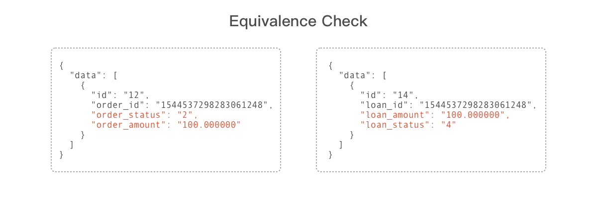
假设先接收到 System A 的 binlog 消息，暂存 Redis，规定时间内也接收到了 System B 的 binlog 消息：
- 根据 System B 这条 binlog 的特征，发现配置有两条核对规则：
loan_amount为 200，需要找到一条对应的 System A 的 binlog，且order_amount需与之匹配；loan_status为 4，需要找到一条对应的 System A 的 binlog，且order_status需为 2。
对于不同系统间产生的单条记录变更的核对，等值和映射检查能覆盖到大部分场景。但是因为这两种核对的逻辑都是固定下来的，所以业务方如果有不同的核对需要，则需要新的代码逻辑实现。为此，研发团队考虑将核对逻辑交给使用方来描述，因而催生出了表达式核对的功能。
2.2.2 表达式核对
如果我们考虑以下的 binlog 示例，不同系统间的数据模型设计并不一致，字段非一一对应。
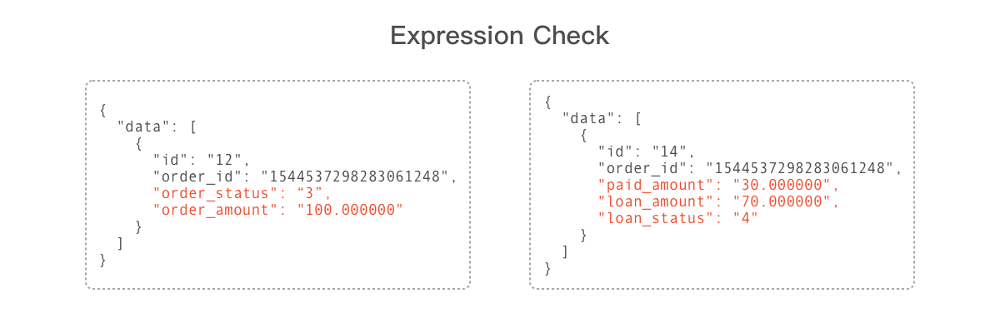
System A 记录了订单的金额为 100，而 System B 记录了订单的已支付金额为 30，借贷金额为 70，需要核对的是 System A order_amount 是否等于 System B paid_amount + loan_amount，原有的设计无法支持。
为此，我们引入了表达式求值的方案，当 binlog 抵达时，使用方通过一个返回值为布尔类型的表达式来描述自己的核对逻辑，如：
- 判断 2.2.2 中求和场景：
a.order_amount == b.paid_amount + b.loan_amount - 兼容判断 2.2.1 中场景：
a.order_amount == b.loan_amounta.order_status == 2 && b.loan_status == 4
在表达式核对方案下，两个系统间的几乎所有的单条数据核对场景都能进行覆盖，且这种方案的好处在于研发团队不用再费心思提供新的计算、映射、与或非逻辑实现的支持，大大减少了维护成本。
2.2.3 动态配置数据核对
在电商和金融的场景中，存在一些动态数据，例如费率、活动优惠折扣等，会随着业务和运营计划发生实时变化。这类数据通常存储在配置表中，因此通过简单的表达式无法进行定义，而不同业务系统中的配置表结构设计也不一样，很难在核对系统代码中进行声明。
为了满足这种场景，RCS 引入了对业务系统 SQL 查询的支持，当获取到新的 binlog 时，检查这条 binlog 满足的核对规则，使用方在核对规则中会配置需要执行的 SQL 语句，以及分库分表规则，由核对系统执行并得到比对的内容，再进行表达式核对：
- binlog 中获取到当前订单的费率
order_rate为 0.5。 - 根据配置信息执行
SELECT语句查询实时的费率rate。 - 执行表达式核对
a.order_rate == rate。
除此之外，RCS 也能支持 JSON 串核对，譬如 System A 需要核对 order_rate，但是存储 order_rate 信息是一个 JSON 串，rate_info = {"decimal_base":"10000", "order_rate":"0.5"}。可以在 RCS 的核对规则中，自定义 JSON 解析表达式，提取真实需要核对的字段。
3. 性能表现
RCS 系统的性能主要取决于 Data Fetching Layer 和 Data Checking Layer。
Data Fetching Layer 的性能代表实时获取变更数据的能力，受 binlog 解析（CPU 密集型任务）及 Kafka 的消息持久化（I/O 密集型任务）影响。业务团队可根据需要选择对应的硬件搭建 CDC 模块，以我们使用场景为例，每秒可投递的消息数量超过 20K。
Data Checking Layer 则负责进行数据核对，为了测试 RCS 的性能极限，Data Fetching 采用 Kafka 发送源数据，核对系统采用单机部署。测试结果表明，RCS 每秒可完成核对 10K+ 次，详细数据如下：
| Component | Machine |
|---|---|
| Kafka | 3 * 48 Core 128 GB |
| Redis | 3 * 48 Core 128 GB |
| Real-time Checking System | 1 * 48 Core 128 GB |
| Number of check entry | TPS | CPU Cost |
|---|---|---|
| 1 entry | 14.3K | 454% |
| 2 entries | 12.0K | 687% |
| 3 entries | 10.4K | 913% |
从压测结果分析，RCS 的性能瓶颈主要取决于 Redis 集群的性能，单次核对耗时约为 0.5ms。 当然，RCS 支持集群部署，做为 Kafka 的消费者，可以利用 Kafka consumer group 的 Rebanancing 机制，从而实现动态扩/缩容的机制。
4. 总结
Shopee Financial Products 团队在 2021 年落地的 RCS 目前在多个产品线推广和使用，主要解决传统 T+1 式离线数据核对延迟高、业务耦合紧密，且随新业务上线还带来额外的开发负担的问题。
RCS 通过灵活的核对规则配置化、表达式场景覆盖以及 Log-Based 的 CDC 方案，提供近实时的数据核对解决方案，最大程度地降低数据不一致导致的资金、信息安全等风险。我们也欢迎不同的用户和团队接入或部署使用，在后续的更新迭代中，RCS 会进一步提升核对的性能，以支撑业务量增长带来的核对需求。